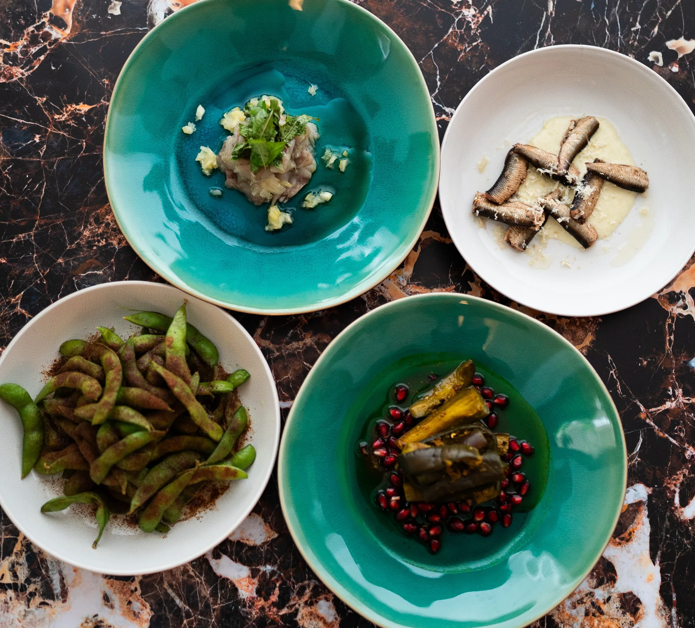

12th C. Levant
Court of Saladin
Spit-roasted meats & soured pomegranate confection.
Beyond our signature menus, Epochurian researches and builds one-off feasts around any era, civilisation, literary world, or family heritage.
Your Dining Room: Anywhere in London & Greater London.
N10 Garden: Limited private bookings.
Get in touch to discuss your date, guest count, and preferred historical era.

Scan to explore full menus at epochurian.com

Private Chef · London

Spit-roasted meats & soured pomegranate confection.

Spiced forest game, venison & duck liver.

Romanov classics & blini with caviar.

Imperial court craft & snow fungus pear soup.
Plus Age of Discovery & bespoke periods on request.
Deeply researched historical menus cooked live in your home, pairing authentic ingredients with course-by-course storytelling.
Pick a signature feast or request any historical period.
Tailored to your palate, dietaries, and domestic kitchen.
Each course introduced with its story; kitchen left spotless.

Born into Cantonese, Shanghainese, Egyptian, Russian, Dutch and British culinary traditions, Josh began cooking at 10 and has catered private feasts since his early twenties. Epochurian turns historical research into unforgettable dinner-table adventures.